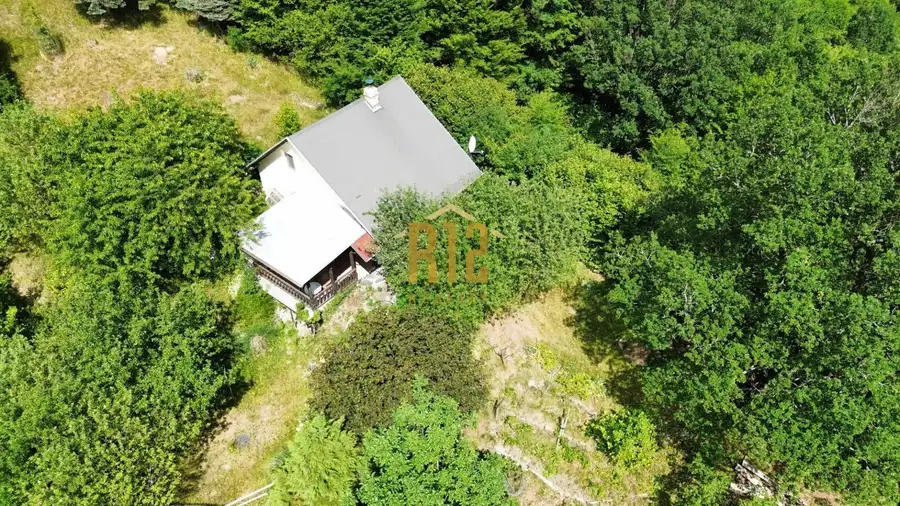
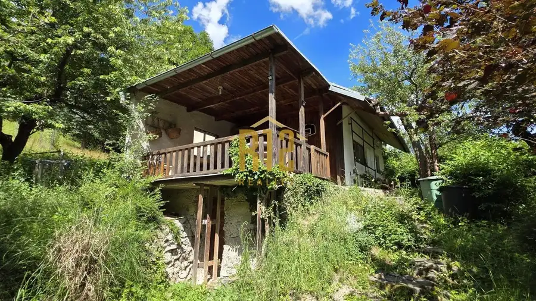
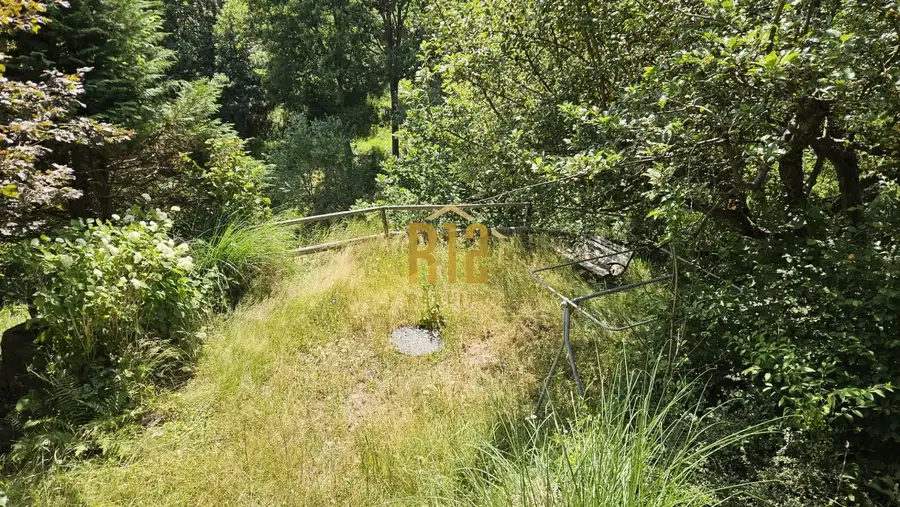
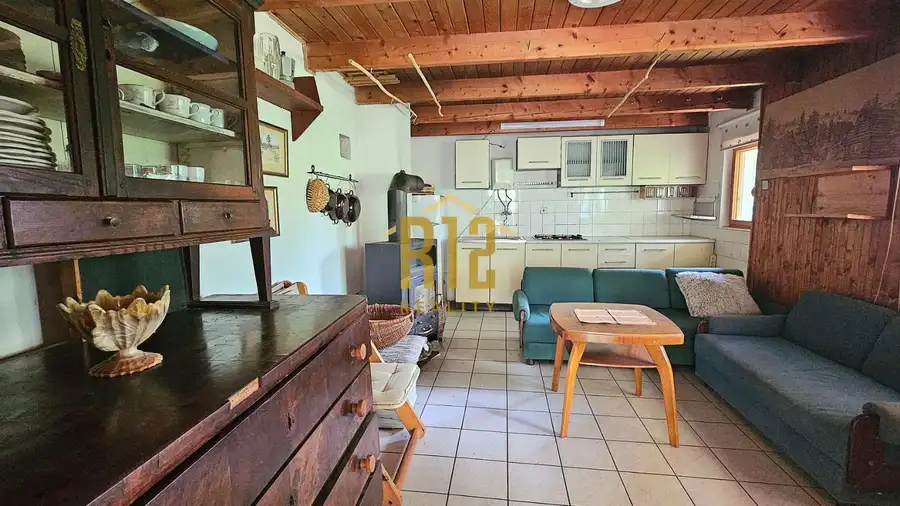

EXKLUZÍVNY Predaj chata Hodruša Hámre, okr. Žarnovica
Hodruša-Hámre




- Plocha100 m²
- StavČiastočná rekonštrukcia
- VlastníctvoOsobné
O nehnuteľnosti
R12 reality ponúka na predaj Rekreačnú chatu v srdci prírody – Hodruša-Hámre Hľadáte dokonalý únik z mestského zhonu, miesto na rodinné víkendy alebo skvelú investíciu na rekreačný prenájom? Táto chata v malebnom prostredí Štiavnických vrchov čaká práve na vás. Základné informácie- Lokalita: Hodruša-Hámre- Úžitková plocha: 100 m²- Rozloha pozemku: 2 125 m²- Konštrukcia: Kombinácia kameňa a tehly- Inžinierske siete: Elektrina, žumpa- Prístup: Celoročne dostupný po spevnenej verejnej ceste- Dispozícia a vybavenie chatyObjekt prešiel v minulosti čiastočnou rekonštrukciou, počas ktorej bolo pristavané priestranné podkrovie.- Prízemie: Útulná obývacia izba prepojená s kuchyňou, samostatná spoločenská miestnosť s TV a kúpeľňa so sprchovacím kútom a toaletou.- Podkrovie: Čiastočne rozdelené na dve časti. Ponúka kapacitu až pre 8 lôžok, vlastnú TV a praktické odkladacie priestory.- Pozemok a okolie- Nádherné výhľady: Svahovitý, no veľkorysý pozemok (2125 m²) zaručuje maximálne súkromie.- Panenská príroda: Obklopené lesmi Štiavnických vrchov, ideálne na turistiku, cykloturistiku či hubárčenie. KontaktV prípade záujmu o obhliadku alebo viac informácií ma neváhajte kontaktovať:- Maklér: Ing. Erika Mojžišová- Telefón: +421 911 414 462 e-mail: mojzisova@r12.sk
Parametre
- Druh
- Chalupa, rekreačný domček
- Dátum zverejnenia
- 07. 07. 2026
- Plocha pozemku
- 2125 m²
- Počet nadzemných podlaží
- 1
- Počet podzemných podlaží
- 1
- Stav nehnuteľnosti
- Čiastočná rekonštrukcia
- Terén pozemku
- Svahovitý
- Typ
- Predaj
- Typ konštrukcie
- Kamenná
- Vlastníctvo
- Osobné
- Vybavenie
- Terasa, Sklad
- Zastavaná plocha
- 69 m²
- Úžitková plocha
- 100 m²